Soyez les bienvenus
République Algérienne Démocratique et Populaire
Ministère de l'enseignement supérieur et de la recherche scientique
Université Mouloud Mammeri de Tizi-Ouzou (UMMTO)
Faculté du génie de la Construction
Département de génie Civil
Mémoire de fin d'étude
En vue de l'obtention du diplôme de master
Spécialité : Structure
Thème
Influence du site sur le calcul dynamique des structures :
Étude comparative RPA 2024 vs RPA 2003
Présenté par : Mr. AMALOU Jugurta
Encadré par : Pr. HAMIZI Mohand
Plan de travail
- Introduction
- Analyse comparative des règlements (RPA)
- Présentation des structures
- Modélisation
- Outils de calcul
- Analyse des résultats
- Analyse comparative
- Conclusion
Introduction
L'Algérie ce situe dans une région géologique active.

Ce mémoire a pour objectif d'étudier et de comparer le comportement dynamique des structures sous les deux règlements RPA 2003 et RPA 2024, à travers deux structures (R+3 et R+6) sur plusieurs classes de site. Cette comparaison permettra ensuite d'évaluer l'impact économique de ces différences, notamment en termes de quantités d'aciers nécessaires.
Analyse comparative :
RPA 2003 vs RPA 2024
Évolution chronologique du RPA

Structure des chapitres du RPA

Classifications des zones sismiques


Classification des sites
On recense 4 sites identiques :
- Site S1 : Roche ou sol très ferme
- Site S2 : Sol ferme
- Site S3 : Sol meuble
- Site S4 : Sol très meuble
Le RPA 2024 adopte un 5éme site
Conditions pour classer en site S5 :
- Présence de sols instables sous action sismique.
- Présence de sols vaseux ou d'argile avec une très forte teneur en matières organiques sur une épaisseur de plus de 3m.
- Présence d'argile très plastique sur une épaisseur de plus de 7.5m
Impact du site sur les calculs

Impact du coefficient de site "S" du RPA 2024 sur le spectre de réponse
Le coefficient agit comme un facteur multiplicateur

Coefficient d'importance "I"
Le RPA 2024 intégre un autres coefficient "I" lié au groupe d'usage (d'importance)
- Groupe 1A : I = 1,4
- Groupe 1B : I = 1,2
- Groupe 2 : I = 1,0
- Groupe 3 : I = 0,8
Classification des systèmes de contreventement
Le RPA 2003 est composée de 4 catégories :
- Structure en béton armé
- Structure en acier
- Structure en maçonnerie
- Autres systèmes
Le RPA 2024 rajoute :
- Structures associant les PAF
- Structures en bois
Calcul de la force sismique par la MSE
RPA 2003 :

RPA 2024 :

La formule pour calculer le poids :

| Type d'ouvrage | Beta RPA 2003 | Psi RPA 2024 |
|---|---|---|
| Bât. à usage d'habitation ou bureaux | 0,20 | 0,30 |
| Bât. recenvant du public temporairment | 0,30 | 0,40 |
| Entropots, hangars | 0,40 | 0,50 |
| Archives, bibliothèques, réservoirs... | 1,00 | 1,00 |
| Autres locaux | 0,60 | 0,60 |
Formules des spectres de réponses
Formules du spectre horizontal de calcul


Le RPA 2024 franchit une étape en introduisant le spectre vértical

Combinaisons d'action horizontales

Combinaisons d'action verticales (RPA 2024)


Coffrage et ferraillage
- Les dimensions minimales du coffrage restent pratiqument inchangées
- Augementation générale du pourcentage des armatures minimale et maximale
- Augmentation des longueurs de recouvrements des barres
- Baisse des valeurs des espacements des barres verticales
- Vérification de l'effort normal réduit pour les voiles
Présentation des structures
Description du bâtiment (R+3)

- Bâtiment à usage d'habitation de 4 niveaux
- Structure autostable en béton armé
- Implantée à TIZI-OUZOU ville
- Zone sismique IIa selon le RPA99/v2003 et IV selon le RPA 2024
- Groupe d'importance 2
Caractéristiques géométriques (R+3)
- Hauteur totale : H = 13,2 m
- Hauteur d'étage : h = 3,3 m
- Longueur totale : L = 14,6 m
- Largeur totale : l = 11,5 m
- Surface totale : S = 167,9 m2
Description du bâtiment (R+6)

- Bâtiment à usage de bureaux de 7 niveaux
- Structure mixte (voiles+portiques) en béton armé
- Implantée à TIZI-OUZOU Tamda
- Zone sismique IIa selon le RPA99/v2003 et IV selon le RPA 2024
- Groupe d'importance 2
Caractéristiques géométriques (R+6)
- Hauteur totale : H = 27,88 m
- Hauteur d'étage : hRDC = hétage = 3,74 m / h1 = 5,44 m
- Longueur totale : L = 30 m
- Largeur totale : l = 21,2 m / 12,96 m
- Surface totale : S = 580,56 m2 / 297,66 m2
Caractéristiques mécaniques des matériaux


Dimensions des éléments (R+3)

Dimensions des éléments (R+6)

Charges et surcharges d'exploitations (R+3)
Charges permanentes (G)
- Plancher terrasse inaccessible : G = 6,26 kN/m2
- Plancher d'étage courant : G = 5,13 kN/m2
- Escaliers (paillasse) : G = 3,07 kN/m2
- Escaliers (palier) : G = 1,64 kN/m2
- Mur extèrieur : G = 2,74 kN/m2
- Acrotère : G = 2,055 kN/m
Surcharges d'exploitations
- Plancher terrasse inaccessible : Q = 1 kN/m2
- Plancher étage courant : Q = 1,5 kN/m2
- Escalier : Q = 2,5 kN/m2
Charges et surcharges d'exploitations (R+6)
Charges permanentes (G)
- Plancher en corps creux : G = 5,45 kN/m2
- Dalle pleine (balcons) : G = 6,35 kN/m2
- Escaliers (paillasse) : G = 3,07 kN/m2
- Escaliers (palier) : G = 1,64 kN/m2
- Mur extèrieur : G = 2,94 kN/m2 (10 kN/m)
- Acrotère : G = 2,055 kN/m
Surcharges d'exploitations
- RDC : Q = 3,5 kN/m2
- 1er étage : Q = 4 kN/m2
- Étages courants : Q = 2,5 kN/m2
- Terrasse et balcons : Q = 1 kN/m2
- Escalier : Q = 2,5 kN/m2
Récapitulatif des paramètres sismiques
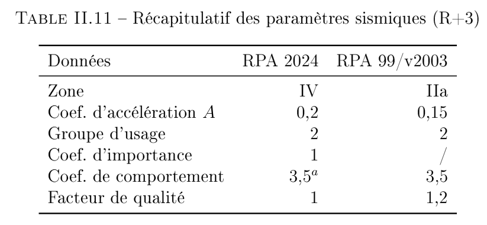
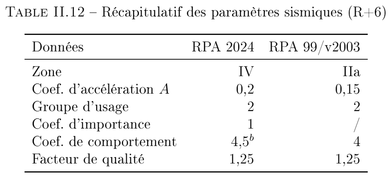
Modélisation
Pour la modélisation le logiciel ETABS sera utilisé.
ETABS est un logiciel de calcul par éléments finis
La version 22.7 sera utilisé car elle dispose d'une interface programable.
Les differentes méthodes de calcul
Les méthodes d'analyse linéaire (comportement élastique)
- Méthode statique équivalente.
- Méthode modale spectrale.
- Méthode temporelle linéaire
Les méthodes d'analyse non-linéaire (comportement post-élastique)
- Méthode Pushover.
- Méthode analyse temporlle non-linéaire
La méthode modale spectrale sera utilisée pour l'analyse sismique de la structure
Outils de calcul
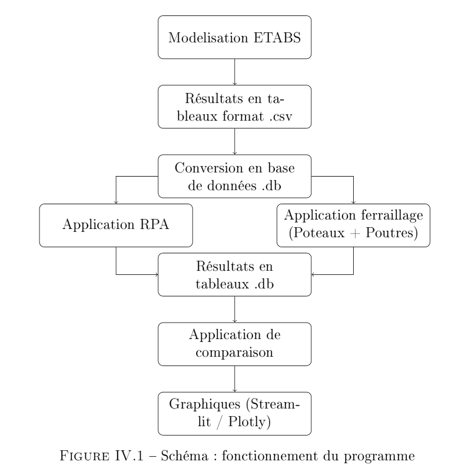
Le programme est subdivié en plusieurs applications :
- Vérifications règlementaires (RPA)
- Calcul du ferraillages et vérifications
- Comparer les résultats
Vérifications règlementaires (RPA)
- Les modes à retenir.
- Vérification des forces sismiques
- Distrubution de la force sismique sur les étages
- Vérification de la stabilité (Renversement).
- Déplacement inter-étages
- L'effet P-Delta
Ferraillage
- Ferrailler les poutres en flexion simple (appuie et travée)
- Ferrailler les poteaux flexion composée et composée déviée
- Ferraillage transversale
- Calcul des quantités d'aciers.
Autres vérifcations
- Contraintes de cisaillements pour les poutres (BAEL A5.1.211).
- Contraites à l'ELS pous les poutres.
- L'effort normal réduit pour les poteaux (RPA A.7.4.3).
- Contraintes tangentielles pour les poteaux (RPA A.7.4.3).
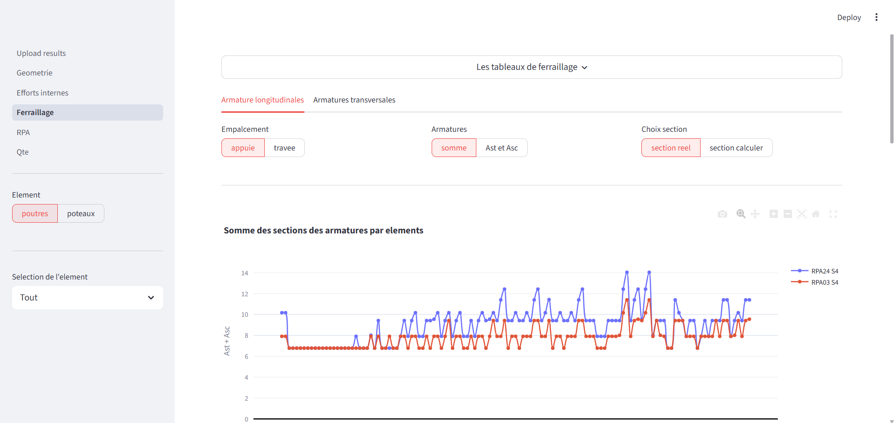
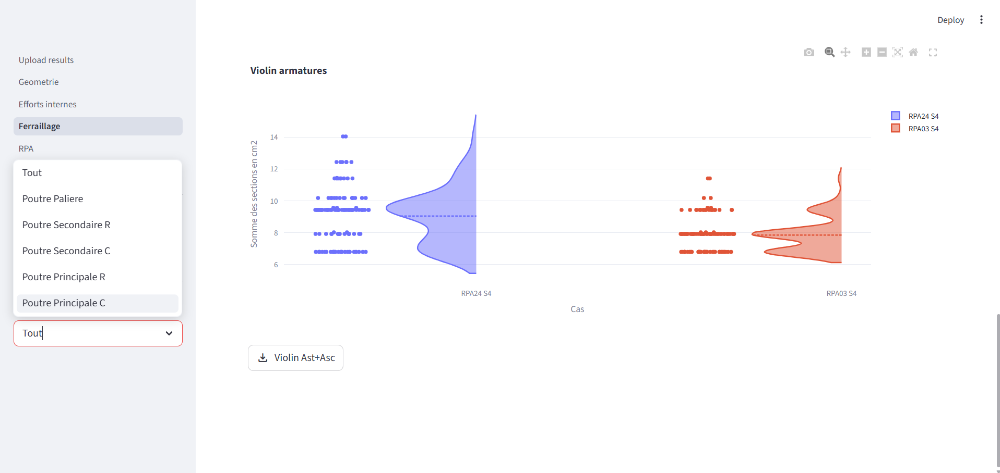
Analyse des résultats
Analyse modale
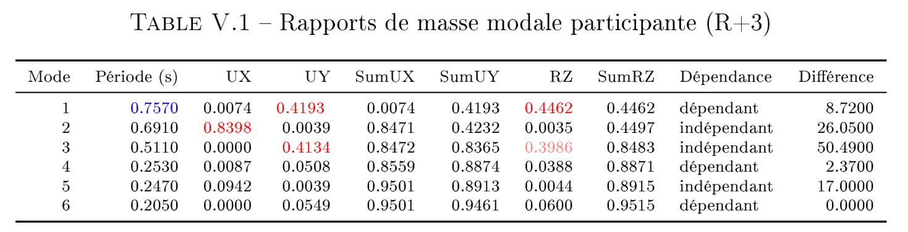
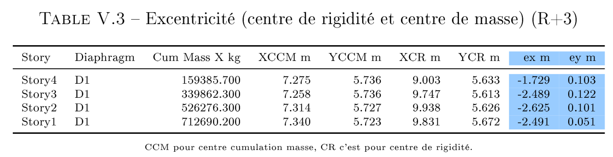
Excentricité moyenne selon x est de : 2.3 m
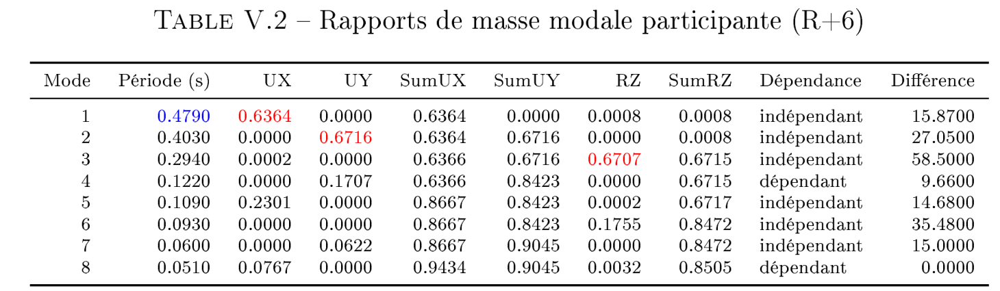
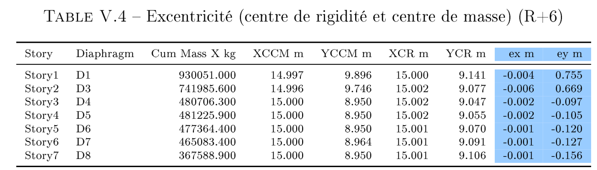
Les forces sismiques
La condition VETABS > 80% VMSE est vérifier pour tout les cas
Dépalcements inter-étages et l'effet du seconde ordre
Ces vérifications sont satisfaites.
Stabilité au renversement
Condition vérifier sauf pour :
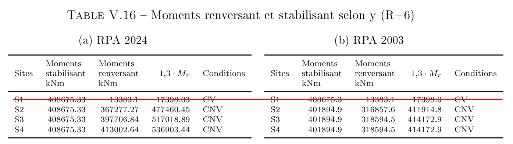
Analyse comparative
Forces sismiques
Structure (R+3)
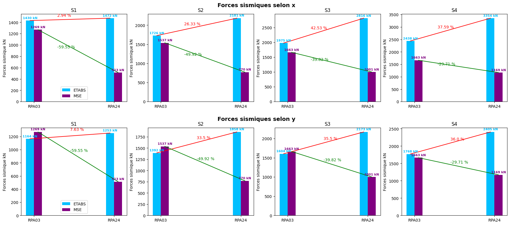
Structure (R+6)
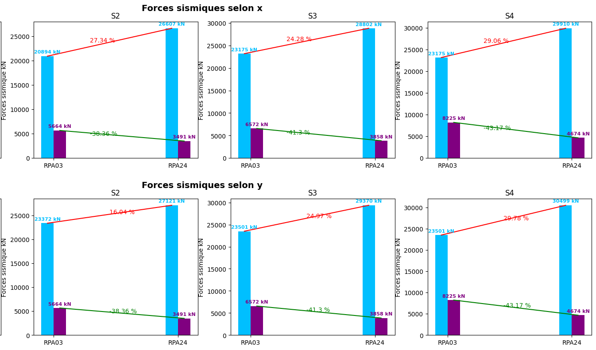
Déplacements d'étages
Structure (R+3)
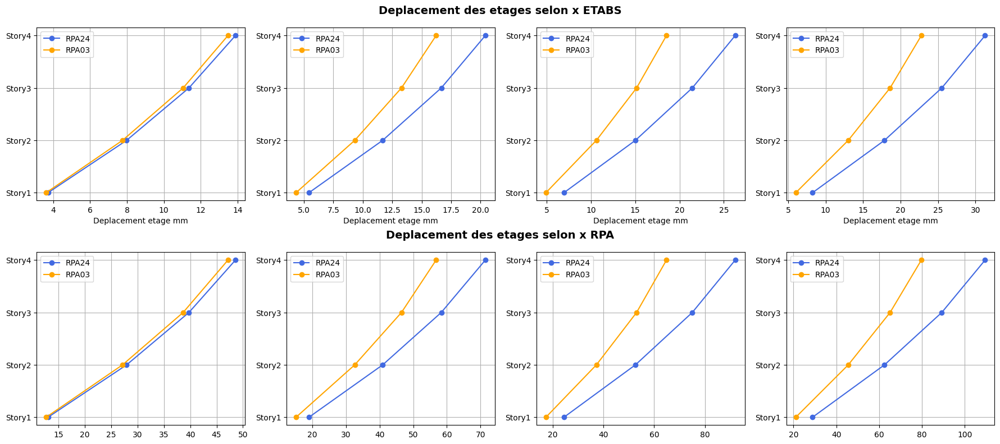
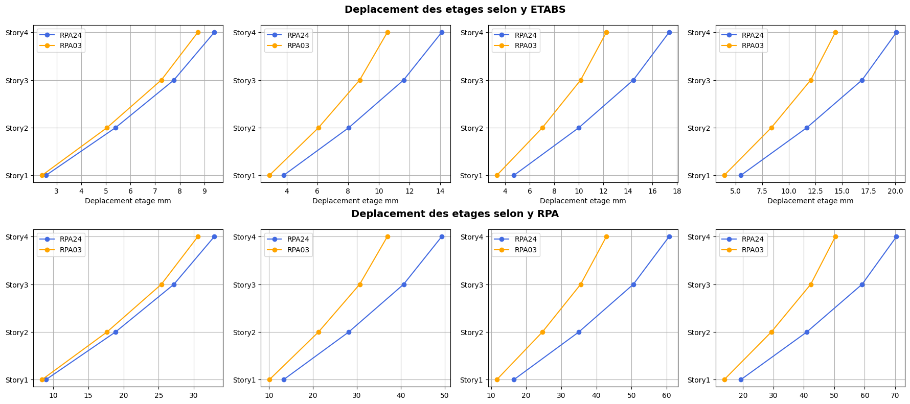
Structure (R+6)
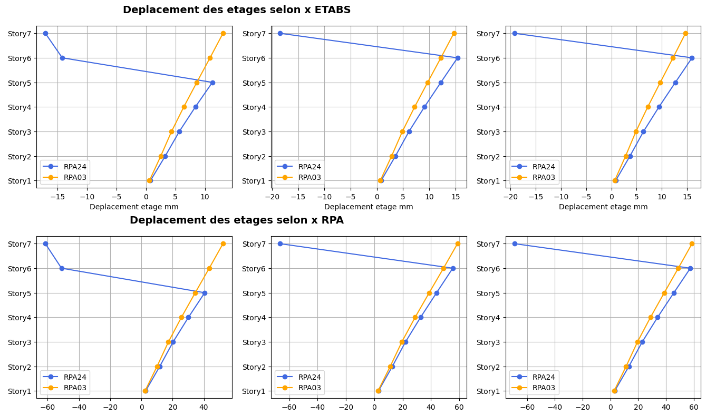
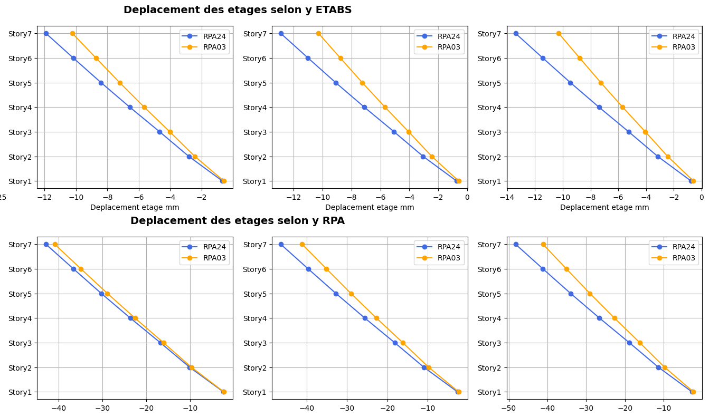
Quantités d'aciers
Structure (R+3)
Armatures longitudinales
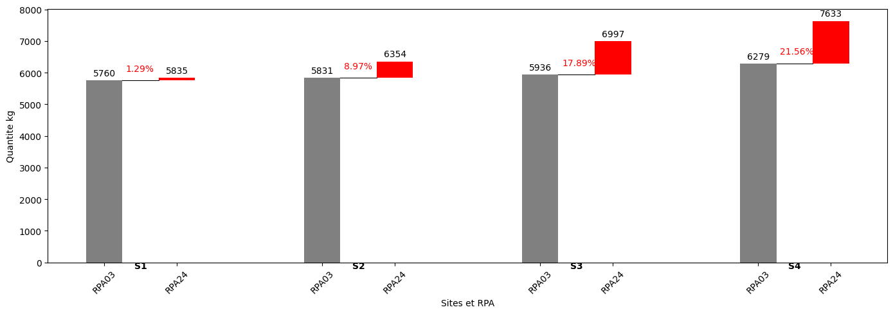
Armatures transversale
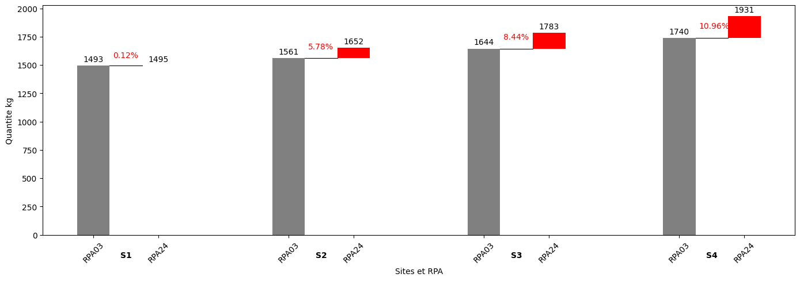
Structure (R+6)
Armatures longitudinales
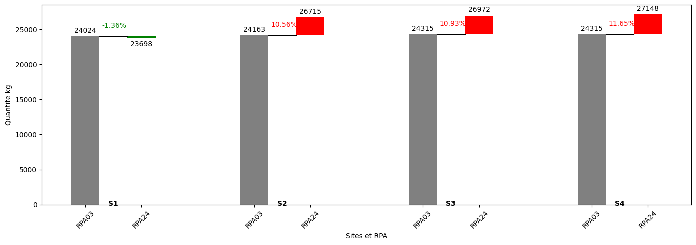
Armatures transversale
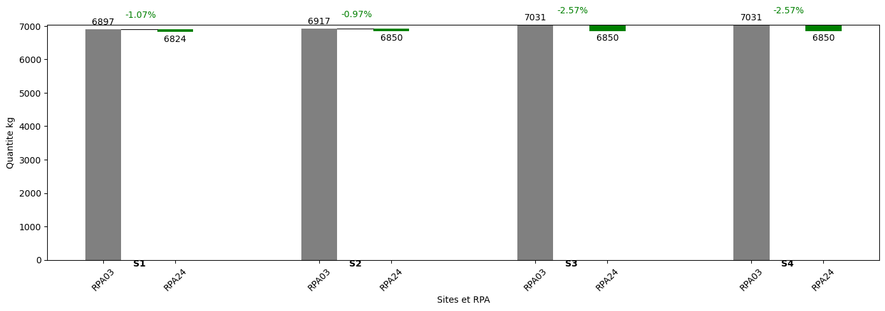
Conclusion
Cette étude comparative confirme que le RPA 2024 introduit une évaluation de l'action sismique plus rigoureuse que le RPA 2003, notamment à travers le nouveau coefficient de site.
les résultats restent pratiquement similaires entre les deux règlements pour le site S1, puis l'écart s'accentue graduellement à mesure que le sol devient plus meuble.
Par ailleurs, le développement d'un outil Python a permis d'automatiser l'ensemble des cas d'étude de manière cohérente.